Giorno 5 di 15 · Lunedì 7 dicembre · Kyoto
Nijo, Manga Museum, Nishiki e Gion di sera
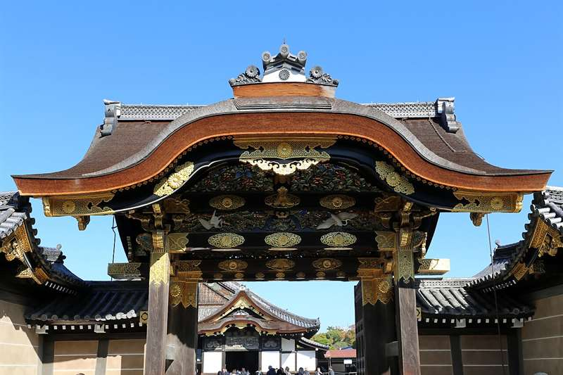
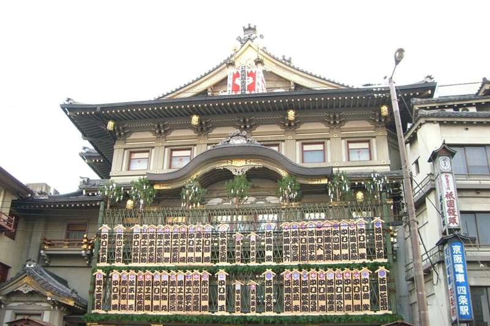
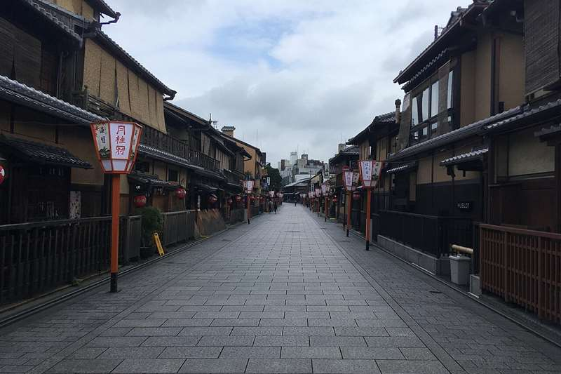
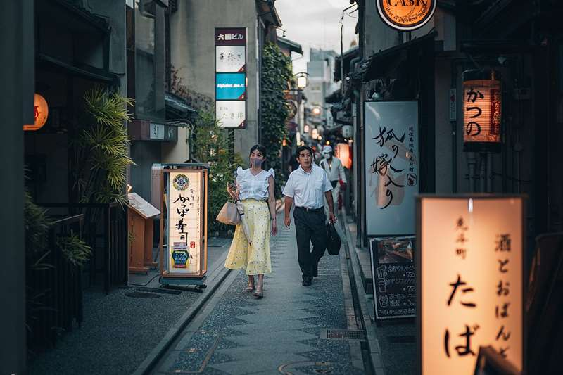
In sintesi
- Mattina Castello di Nijo e il mercato di quartiere di Sanjo-kai.
- Pomeriggio Manga Museum, Mercato Nishiki e le gallerie coperte.
- Sera Gion e Pontocho quando si accendono le lanterne.
Itinerario
- 08:25A piedi dall'hotel — il Castello di Nijo è a 1,2 km da Shijo-Omiya: un quarto d'ora verso nord-est, senza prendere niente. È l'unica giornata di Kyoto che comincia dalla porta di casa.
- 08:45Castello di Nijo — apre alle 8:45 e alle 9 non c'è ancora nessuno. Il Palazzo Ninomaru ha i celebri pavimenti dell'usignolo, costruiti per cigolare come un canto d'uccello e tradire gli assassini. 1.300 yen, un'ora e mezza.
- 10:15Sanjo-kai Shotengai — cinque minuti a sud del castello, dall'incrocio di Horikawa-Sanjo, parte la galleria coperta di quartiere più lunga di Kyoto: ottocento metri e circa centottanta negozi fino a Senbon, nati alla fine degli anni 1860. È il contrario di Nishiki: macellerie, pescivendoli, sottaceti e verdure per chi abita qui, senza un cartello in inglese. La macelleria Imamura, vicino alla stazione Nijojo-mae, frigge in vetrina crocchette e tonkatsu: una korokke costa meno di cento yen. Se ne fa un tratto, fino a Omiya-dori, e si torna indietro. Attenzione alle biciclette: sotto la galleria circolano, e prima delle 14 passano anche i furgoni.
- 11:00A piedi verso est — un quarto d'ora lungo Oike-dori fino a Karasuma-Oike.
- 11:15Kyoto International Manga Museum — 300.000 volumi in un'ex scuola elementare del 1869, con corridoi in legno e aule trasformate in scaffali. Si possono prendere e leggere ovunque, anche sul prato. Chiude alle 17:00 (ultimo ingresso 16:30).
- 13:00Mercato Nishiki, e il pranzo lì ci tornate apposta — 400 metri di galleria coperta e 130 banchi: la "Cucina di Kyoto". Dieci minuti a piedi a sud del museo. Nel 2025 è stato il pranzo del terzo giorno col gruppo, fra Kiyomizu e Fushimi Inari, e vi era piaciuto, quindi torna nel programma. Stamattina avete visto il mercato di chi abita qui; questo è quello da girare con calma, di lunedì, quando si cammina.
- 15:15Teramachi e Shinkyogoku — le due gallerie coperte che partono dalla fine di Nishiki. Negozi di ogni tipo, dalle librerie ai negozi di anime, e riparo se piove.
- 16:30Argine del fiume Kamo — attraversate a Shijo verso est mentre cala il buio. Le luci dei ristoranti che si accendono sull'acqua sono uno dei momenti migliori della giornata.
- 16:45Teatro Minamiza — appena scesi dal ponte di Shijo ve lo trovate davanti, e a dicembre è un'altra cosa rispetto al resto dell'anno. È il teatro kabuki più antico del Giappone (la licenza è del 1610) e in dicembre ospita il Kaomise, il programma con cui la compagnia si presenta per l'anno: per l'occasione la facciata si copre di maneki, le tavole di legno con i nomi degli attori dipinti in kanteiryu, il carattere grasso e tondo usato apposta perché "non lasci spazi vuoti", cioè posti liberi in sala. Ci sono solo adesso, si smontano a fine mese, e guardarle dalla strada non costa niente. Cinque minuti, deviazione zero: siete già lì.
- 17:00Gion — Hanamikoji-dori — la via delle case da tè in legno con le lanterne accese. Fra le 17:30 e le 18:30 è la finestra in cui le maiko si spostano da un impegno all'altro: è l'unico momento realistico per intravederne una.
- 18:15Shirakawa e il ponte Tatsumi — il canale con i salici, appena a nord di Gion. Molto più tranquillo di Hanamikoji e altrettanto bello.
- 19:00Pontocho e la cena — il vicolo largo due metri fra Kamo e Kiyamachi, fitto di izakaya e ristoranti: si percorre tutto, dalle lanterne di Shijo fino a Sanjo, e in fondo si tira dritto per cinque minuti fino a Mishima-tei, all'imbocco di Teramachi, per il sukiyaki prenotato (vedi sotto). Se la cena elegante non vi va, restate nel vicolo: è la serata-izakaya del Kansai.
Le tappe su Google Maps
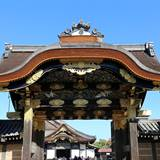
Castello di Nijo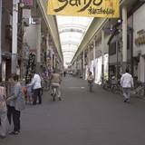
Sanjo-kai- Manga Museum
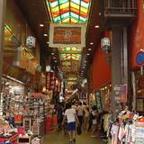
Mercato Nishiki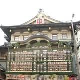
Teatro Minamiza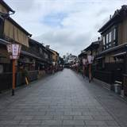
Gion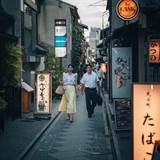
Pontocho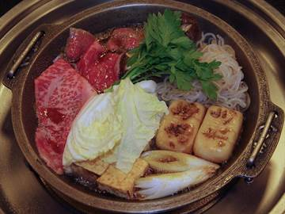
Mishima-tei
Toccate una tappa e si apre in Google Maps: da lì Indicazioni vi dice treno e binario partendo da dove siete.
La mappa si carica solo se la toccate, per non consumare dati: il tracciato è a piedi; dove l'itinerario dice treno o metro, prendete quelli.
Dove mangiare
- Spuntino
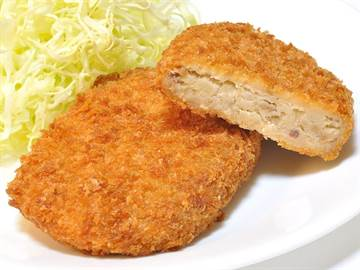
Sanjo-kai — le crocchette delle macellerie della galleria, fritte al momento. Da Imamura, vicino a Nijojo-mae, sotto i cento yen l'una; se vi spingete oltre Omiya-dori, verso Senbon, Hiro fa quelle col manzo, sui 130 yen. - Pranzo
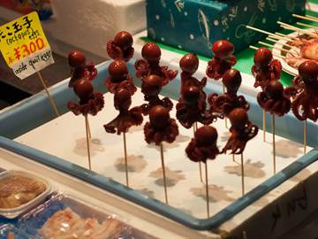
Mercato Nishiki — da Kai (櫂) il tako tamago, un polpetto candito con un uovo di quaglia nella testa. Attenzione: dal 2019 non si mangia camminando, si consuma fermi accanto al banco. - CenaMishima-tei, all'imbocco della galleria Teramachi a cinque minuti da Nishiki: dal 1873 è una macelleria con il ristorante ai piani di sopra, nella casa di legno originale. Si mangia sukiyaki — fettine sottilissime di manzo cotte davanti a voi in una padella di ghisa con soia e zucchero, poi intinte nell'uovo crudo sbattuto. La sera il menu base costa circa 17.500 yen a testa, quello col manzo migliore circa 21.800: è la cena da ricordarsi della settimana di Kyoto, e va prenotata (vedi Prenotazioni). Ultimo ingresso alle 20:00, chiuso il martedì. Se preferite spendere un decimo, Katsukura a Shijo-Kawaramachi fa tonkatsu con cavolo e riso a volontà sui 2.000 yen.
Note e dritte
La logica della giornata: è una linea retta da ovest a est, tutta in centro e tutta a piedi. Si comincia con l'unica tappa che apre presto e chiude presto (Nijo), si passa dal mercato di quartiere lì accanto, poi il museo al coperto nelle ore centrali, si mangia a Nishiki e si arriva a Gion esattamente quando serve — cioè al buio.
Due mercati, uno nuovo e uno che conoscete. Nishiki resta perché nel 2025 vi era piaciuto, ed è il mercato di Kyoto più comodo da girare. Ma è anche diventato in buona parte una via di spuntini per turisti. Sanjo-kai è quello che Nishiki era prima: una galleria dove la gente del quartiere fa la spesa. Tenerli nella stessa giornata serve proprio a vedere la differenza. Sanjo-kai non conta come secondo mercato fatto apposta: è sulla strada fra il castello e il museo, e si attraversa.
Perché Gion di sera e non di pomeriggio. Gion di giorno è un quartiere di case chiuse e turisti in kimono a noleggio; Gion alle sei di sera, con le lanterne accese e il rumore dei geta sull'acciottolato, è un'altra cosa. Vale la pena spostare tutto il resto della giornata per essere lì all'ora giusta.
Il lunedì è il giorno giusto. Nishiki nel weekend è quasi impraticabile fra le 12 e le 14; di lunedì si cammina. E le due tappe con giorno di chiusura sono entrambe aperte oggi: il Castello di Nijo chiude il martedì in dicembre, il Manga Museum chiude il mercoledì. Se dovete spostare questa giornata, tenetene conto.
Se il kabuki vi tenta davvero. Il Kaomise vero è un impegno serio: quattro ore o più, e i posti buoni costano parecchio. Shochiku però mette in vendita anche biglietti ridotti pensati per chi non c'è mai stato, nei posti alti — controllate il programma sul sito del Minamiza quando avvicinate la partenza. Se lo fate, occupa un pomeriggio intero e va scambiato con qualcos'altro, non aggiunto: in quel caso il candidato da sacrificare è il Manga Museum, che è al coperto e recuperabile in una giornata di pioggia.
Una regola da rispettare: non fermate e non fotografate le maiko. Nelle vie private di Gion è vietato per ordinanza comunale e la multa arriva a 10.000 yen. Foto della strada sì, foto delle persone no.
Extra nerd, se avanza tempo: lungo Teramachi ci sono un Book Off e diversi negozi di usato — manga a 110 yen e giochi a prezzi che a Tokyo non trovate. È l'assaggio della giornata di Nakano.
Se oggi non gira. Il pomeriggio si libera È la giornata di Kyoto che costa meno tagliare: Nishiki, Teramachi e Shinkyogoku sono gallerie e negozi, niente orari e niente biglietti. Il Castello di Nijo però apre e chiude presto, quindi se salta il mattino salta del tutto. Gion tenetela comunque: è il motivo per cui la giornata è costruita al contrario.
Uscita facoltativa: Uji, mezza giornata Opzionale
L'uscita fuori porta del programma è Himeji, al Giorno 7. Se ne volete una seconda in Kansai, la scelta giusta a dicembre è Uji: venti minuti di treno da Kyoto, mezza giornata scarsa, e soprattutto non dipende dalla stagione — quello che si va a vedere è architettura e un fiume, non il bosco. Funziona identico a dicembre e ad aprile. (Uji è anche la capitale del tè verde: ignoratela, quella parte, e non ci perdete niente.)
- Byodo-in — la Sala della Fenice del 1053, uno dei pochissimi edifici dell'epoca Heian sopravvissuti, con le due fenici di bronzo sul tetto. È l'edificio disegnato sulla moneta da 10 yen, e le fenici erano sul retro della vecchia banconota da 10.000 (quella nuova, dal 2024, ha la stazione di Tokyo): probabilmente lo avete già in tasca senza saperlo. Si specchia in uno stagno pensato apposta per riflettere la facciata. Ingresso al parco 700 yen; l'interno della sala costa 300 yen in più, si prenota all'ingresso per fasce di 20 minuti e vale la pena — dentro c'è il Buddha Amida dorato di Jocho, e cinquantadue bodhisattva musicanti appesi alle pareti.
- Hoshokan — il museo interrato del tempio, moderno e climatizzato, incluso nel biglietto: qui stanno le fenici originali e la campana, sostituite all'esterno da copie.
- Ujigami Jinja — dall'altra parte del fiume, gratis, cinque minuti di visita: è la più antica architettura di santuario ancora in piedi in Giappone (circa 1060). Non è spettacolare, è vecchia — e sapendolo cambia.
- Byodo-in Omotesando — la via che porta al tempio. Sappiatelo prima: Uji è il tè verde giapponese e le vetrine sono quasi tutte quello, gelati e parfait compresi. Non è roba per voi, quindi trattatela come una strada di passaggio e tirate dritto fino al tempio. Il pranzo fatelo dopo, tornati a Kyoto.
- Il fiume — Uji è l'ambientazione degli ultimi dieci capitoli del Genji monogatari; c'è anche un museo dedicato, se il libro vi dice qualcosa. Altrimenti basta il ponte: è documentato dal 646 d.C.
Come incastrarla: il programma non ha mezze giornate libere, quindi va scambiata, e il posto che costa meno è la mattina di oggi. Taxi o autobus fino a Kyoto Station, alle 8:15 la JR Nara fino a Uji (una ventina di minuti), a Byodo-in alle 8:50; si rientra verso le 12:30 e la giornata riprende da Nishiki alle 13:00, come scritto. Si perdono il Castello di Nijo, Sanjo-kai e il Manga Museum: se una di queste cose vi interessa davvero, allora Uji lasciatela stare. Costo: ~500 yen di treno e 1.000 di ingressi a testa.